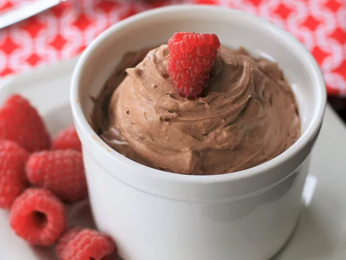
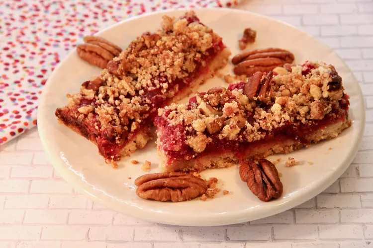
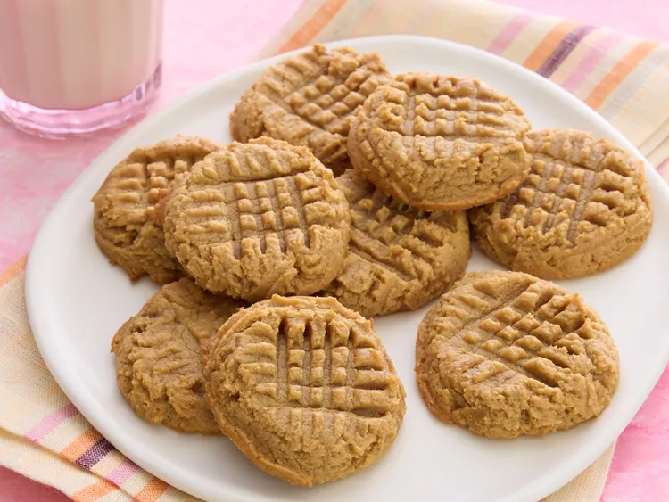

Hiya! I made this little site as my first project for The Odin Project. None of these recipes and images are mine and I used them solely for this learning project. Sources are linked at the bottom of every individual recipes page. For those of you who like visuals, I have provided this little site with clickable images. Definately not necessary but also definately more fun! :)
All recipes are KETO, enjoy!

Perhaps I can interest you in some delicious chocolate mousse.

Maybe a fresh cranberry streusel bar is more your cup of tea.

But if cookies are what you crave, these delicious peanut butter cookies will certainly satisfy your cookie desires.